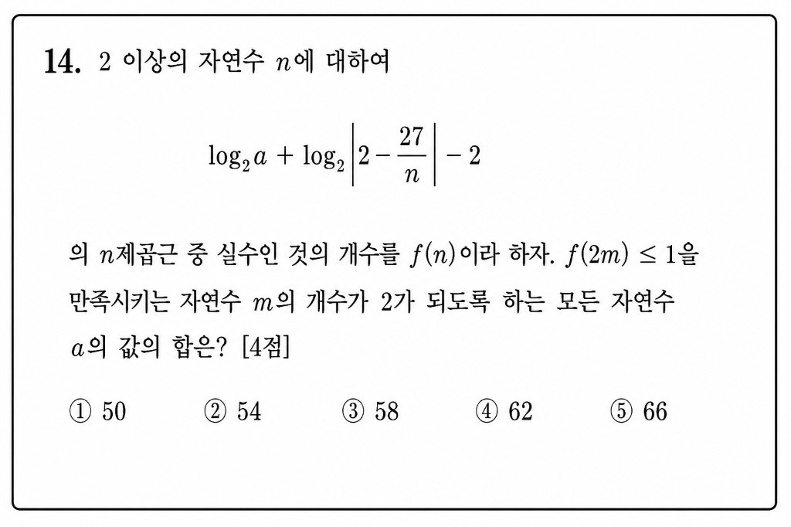

전체 풀이
식 전체를 Aₙ이라 두면, 2m은 짝수이므로 f(2m) ≤ 1은 A₂ₘ ≤ 0과 같습니다.
따라서 log₂a + log₂|2 - 27/(2m)| - 2 ≤ 0이고, 이를 정리하면 a|4m - 27| ≤ 8m을 얻습니다.
m=6에서는 a≤16, m=7에서는 a≤56입니다. 정확히 두 개의 m만 만족해야 하므로 바로 바깥 m=8이 만족하지 않아야 해서 5a>64, 즉 a≥13입니다.
따라서 13≤a≤16이고, 가능한 a의 합은 13+14+15+16 = 58입니다.